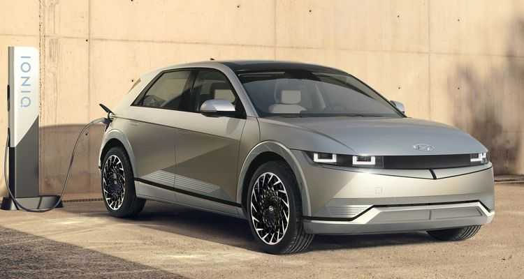
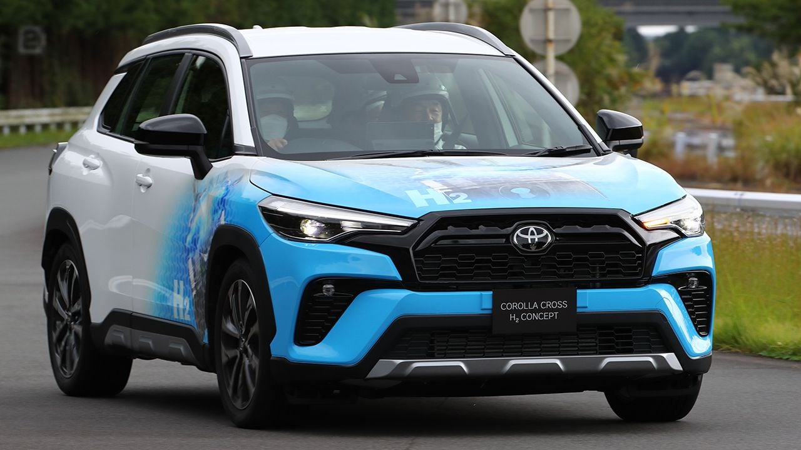

Mejor coche eléctrico del 2022
El diseño del Hyundai Ioniq 5 llama la atención, lo primero, por su imagen, a medio camino según la marca entre un SUV y un turismo; pero también por detalles como sus faros Matrix LED dobles sobre una falsa parrilla oscurecida en el frontal, los tiradores de las puertas integrados sobre los paneles en los laterales, y la franja negra horizontal que cruza el portón de lado a lado.
Mejor coche 4x4 calidad precio 2022

Si buscamos algo para el cambio, fiable, capaz y robusto nada mejor que el Toyota Land Cruiser. Una institución dentro de la categoría y un 4×4 puro de los que ya quedan pocos. Su altura libre, su caja reductora y el bloqueo de diferenciales le permite adentrarse en terrenos donde otros no se atreverían. Una compra lógica en cualquiera de sus formatos, con tres o cinco puertas.
Nuevo Toyota Corolla Cross de hidrógeno caliente
Toyota ha presentado en sociedad un Corolla Cross muy especial. Un prototipo con motor de combustión interna adaptado al uso del hidrógeno caliente. El nuevo Toyota Corolla Cross H2 Concept refleja la apuesta multi-energía que realizará la compañía japonesa durante, como mínimo, la próxima década.